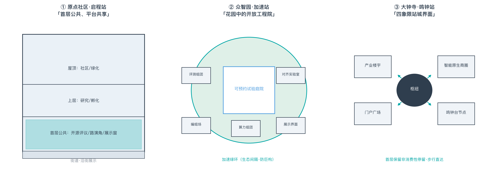

智轨百年·京张新脉——百年京张AI创新带城市设计方案
性质声明：本方案由AI agent生成，全部空间构想均为概念建议、参考方案或供专业团队深化研究的材料，不构成法定规划、审批依据、工程结论、投资承诺或拆改留最终判断。官方精确红线与规划管控指标当前缺失，方案使用仓库登记的provisional边界，待官方数据发布后全部重算。
设计依据与资料清单
本方案的第一依据是北京市规划和自然资源委员会海淀分局发布的《百年京张AI创新带城市设计国际方案征集资格预审公告》source:OFFICIAL-ANNOUNCEMENT，以及面向智能体的任务书 source:AGENT-TASKBOOK。机器可读设计依据来自仓库站点包 source:SITE-PACKAGE，包括 design_brief.json（三级范围、三大定位、五大功能、12条设计任务）、agent_taskbook.json（六项必选任务、十条共创章程、统一边界条款）、allowed_design_space.json（可编辑/锁定图层）、ranges/planning_limits.json（官方面积事实与缺失管控指标清单）、enums/（用地、图层、道路、建筑、来源枚举）、schemas/（成果模式）与 visual_style_recommendations.json（视觉护栏）。
资料使用边界遵循公开来源登记表 source:SOURCE-REGISTRY 与仓库处理资料导航层 source:PROCESSED-FACT-PACK：formal可用来源仅用于相应主张；背景资料不作为正式证据；provisional资料仅用于生成、展示与临时自检。本方案提交的场地边界来自维护者定义的临时边界文件 source:BOUNDARY-SOURCE，三个重点片区边界同源 source:KEY-AREA-SOURCE，二者均为 geometry_role=provisional_constraint、official_boundary=false，不得作为官方红线、审批依据、精确面积复算依据或权属边界。
专业标准依据包括：公告主控要求 standard:PROJECT-OFFICIAL-ANNOUNCEMENT、智能体公开召集任务书 standard:PROJECT-AGENT-OPEN-CALL-TASKBOOK、《城市设计管理办法》要求 standard:MOHURD-URBAN-DESIGN-MEASURES、控制性详细规划编制深度要求 standard:MOHURD-CONTROL-DETAILED-PLANNING、《国土空间调查、规划、用途管制用地用海分类指南》用地分类要求 standard:MNR-LAND-USE-CLASSIFICATION-GUIDE 与建筑工程设计文件编制深度要求 standard:MOHURD-ARCH-DESIGN-DEPTH-2016（用于约束重点区域建筑与公共空间概念成果的表达深度）。设计深度组织对照 depth:existing_conditions_diagnosis（现状诊断与资料缺口）展开：当前可核验的"现状"是公告四至、provisional边界、枚举与指标框架；真正的现状测绘、权属、控规条件仍待官方补充。本章对应的证据引用还包括 data:SITE-001 与 data:CON-HER-001，指标口径见 11,412,842.3 m² 与 43,609,232.6 m²。
三层范围工作框架
公告确立三级范围体系 source:OFFICIAL-ANNOUNCEMENT，本方案按"研究—设计—详设"三层配置工作深度，三级边界均以provisional几何表达并全程标注。
统筹研究范围（约43.6平方公里）：北至北五环、东至京藏高速、南至西直门外大街、西至万泉河路。本层只做产业与未来城市研究，不做空间设计结论；面积事实采用公告数值，provisional复算值见 43,609,232.6 m²，研究底图为提交边界的上级范围。
总体设计范围（约11.4平方公里）：京张遗址公园周边1—2公里城市地区与产业区。本层达到控规深度的城市设计框架：总体结构、用地布局、开发强度逻辑、蓝绿网络、交通骨架与更新策略；提交边界复算面积 11,412,842.3 m²，边界文件 data:SITE-001 明确标注 boundary_precision=provisional_rough。
重点区域范围（约368.4公顷）：自北向南为众智园AI自主创新加速区（公告192.1公顷）、北京AI原点社区（公告104.3公顷）、大钟寺AI产业聚集区（公告72.0公顷）。本层达到规划综合实施方案深度的概念详设，三个片区几何见 data:PROV-KEY-001，复算面积见 3,692,893.0 m² 与 3。
组织方法上，三层范围遵循 depth:three_level_scope_framework：上层研究为中层设计提供产业与人口逻辑，中层设计为下层详设提供结构与指标框架，下层详设反向校核中层布局。provisional边界的精度限制在 proposal、sources、assumptions 与 visual 中一致披露；官方几何到位后，需重算的图层为全部 geometry/*.geojson，需重算的指标为全部面积与比例类指标。
统筹研究范围产业与未来城市研究
总体概念：一条轨道，百年接力。 1909年京张铁路建成，是中国人自主勘测设计建造的第一条干线铁路；今天同一条走廊承载AI创新带。方案将"自主创新"确立为跨越百年的地缘叙事主线，把铁路语义（站、轨、廊、道口、时刻表）转译为创新带的空间语法，形成主名称京张智轨（Jing-Zhang Smart Rail）与四级命名体系：带（京张智轨）—站（启程站/加速站/鸣钟站）—廊（智轨光廊）—节点（原点碑/鸣钟台/天佑·新轨）。命名全部原创，不照搬企业、园区或商标；Logo方向为"之"字形折线母题（人字形铁路抽象+字母Z+数据脉冲），主色京张青、辅色智轨光。此为对 agent.1 任务的回应 standard:PROJECT-AGENT-OPEN-CALL-TASKBOOK。
三大定位、五大功能、三区两翼协同回路：三大定位为百年京张文化带（以叙事与朝圣体系承载）、都市AI生活体验带（以场景卡与公共空间承载）、AI融合创新带（以全栈体系与生态机制承载）。五大功能显式枚举如下并逐项映射到章节与空间载体 source:AGENT-TASKBOOK：
| 五大功能（任务书） | 本方案承载 | 主要空间载体 |
|---|---|---|
| AI全栈自主创新体系 | 众智园加速站：算力评测组团、场景编组场、绿色算力 | 众智园（192.1ha） |
| 世界级AI创新生态 | 原点社区启程站：学者—开发者混合街区、开源市集、研究者协作站 | 北京AI原点社区（104.3ha） |
| AI+场景赋能新范式 | 12 张场景试点卡与发车协议（含 3 张产业测试卡） | 三站两翼全域 |
| 智能化AI活力城市 | 都市AI生活体验带：智轨光廊、智能原生商圈、滨水场景试验带 | 大钟寺（72.0ha）+小月河翼 |
| AI治理全球话语权 | 治理广场、鸣钟验收、模型卡/算法登记与年度治理论坛 | 众智园治理广场+大钟寺鸣钟台 |
三区两翼回路为：原点出思想→众智园加速→大钟寺到城→中关村配要素→小月河验场景→反馈回原点，空间表达见 data:PHASE-01 的示范段逻辑。
全球AI创新生态案例对标（7例，均为公开可查证项目）：对标只提取"空间—生态—治理"机制，不照搬形态、不编造数据。每例以"可证事实的本地转译"与"明确不照搬"两栏对照呈现，逐例登记来源 source:CASE-SF-SOMA source:CASE-LONDON-KINGS-CROSS source:CASE-PARIS-STATION-F source:CASE-SG-ONE-NORTH source:CASE-SEOUL-DDP source:CASE-SZ-BAY source:CASE-ZGC-SELF-EVOLUTION；案例仅证明相关机制曾被公开实践，不证明其绩效、法律或资源可迁移。这是对 agent.2 任务的案例要求回应，证据组织遵循 depth:overall_spatial_structure 与 source:SOURCE-REGISTRY 的用途边界。
| 案例（公开可查证） | 可证事实的本地转译 | 明确不照搬 |
|---|---|---|
| 旧金山 SoMa / Mission Bay source:CASE-SF-SOMA | 锚机构+混合街区的"研发—生活"共址机制，转译为原点社区学者—开发者混合街区 | 不照搬美国土地制度、租金结构与企业名单 |
| 伦敦 King's Cross source:CASE-LONDON-KINGS-CROSS | 铁路遗产枢纽门户更新与高校（UCL等）联动机制，转译为大钟寺枢纽门户与鸣钟台地标 | 不照搬集中产权、国际枢纽与商业地标复制 |
| 巴黎 Station F source:CASE-PARIS-STATION-F | 存量建筑改造为超级孵化器的路径，转译为存量更新承载创新功能的"点状插入"原则 | 不照搬单一业主运营模式与建筑形态 |
| 新加坡 one-north source:CASE-SG-ONE-NORTH | 产城融合与分期开发的节奏机制，转译为"起势—成带—成熟"三期框架 | 不照搬单一开发体制与"建成即成功"叙事 |
| 首尔 DDP source:CASE-SEOUL-DDP | 文化地标带动创新街区的公共带动机制，转译为鸣钟台"古钟—新钟"文化—科技地标 | 不照搬地标建筑形态与网红化运营 |
| 深圳湾超级总部 source:CASE-SZ-BAY | 总部集群与公共空间品质并重的经验，转译为公共空间是创新生产资料的品质标准 | 不照搬总部形态与用地比例 |
| 中关村自身演化 source:CASE-ZGC-SELF-EVOLUTION | 从电子一条街到创新策源的自主演化逻辑，转译为尊重本土路径、不做空降式规划 | 不把历史经验写成可复制的固定公式 |
区域协同矩阵（回应评审维度 regional_synergy） source:AGENT-TASKBOOK source:PUBLIC-REGIONAL-CONTEXT：海淀 AI 创新带不是孤岛，其竞争力取决于与全市及京津冀创新节点的接口质量。本方案以"能力互补—空间接口—数据/IP 边界"三列建立区域协同矩阵，全部为概念建议，不构成行政边界或招商承诺：
| 协同对象 | 能力互补 | 接口与要素流 | 数据/IP 边界 |
|---|---|---|---|
| 北纬社区 source:AGENT-TASKBOOK | 面向青年人才的生活与社区场景试验 | 小月河场景赋能翼的北向延伸，人才通勤与社区试点接口 | 不共享个人数据，试验须授权与脱敏 |
| 未来科学城 source:PUBLIC-REGIONAL-CONTEXT | 基础研究与前沿科学装置 | 众智园评测与算力组团的科研协作接口 | 机构间协议，数据不出域 |
| 怀柔科学城 source:PUBLIC-REGIONAL-CONTEXT | 大科学装置与原始创新 | 原点社区"思想策源"与科研转化的走廊接口 | 成果与知识产权按协议约定 |
| 经开区 source:PUBLIC-REGIONAL-CONTEXT | 智能制造与产业落地能力 | 大钟寺"到站变现"与产业承接的南向接口 | 产业数据按授权边界使用 |
| 京津冀协同 source:PUBLIC-REGIONAL-CONTEXT | 区域腹地的人才、场景与市场 | 智轨带的对外展示与年度活动的区域辐射接口 | 公开成果可复用，受权属与法律限制的数据不进入 |
| 中关村科学城（本带） source:CASE-ZGC-SELF-EVOLUTION | 存量科技服务要素：IP、资本、法务 | 中关村科技服务翼直接承载 | 遵循 source_registry 用途边界 |
区域协同矩阵同时写入 compliance_matrix（agent.2）、visual 展示页与图纸，作为可继续深化的接口清单。
未来城市研判：AI新质生产力改变的是空间的"接口"而非城市的"本体"——人才密度、可步行性、公共空间品质与场景可及性仍是决定性变量。研究结论转译为三条设计原则：存量更新优先、场景即基础设施、公共空间是创新的生产资料。
总体设计范围城市更新与控规深度城市设计
总体设计范围按控规深度的城市设计框架组织 standard:MOHURD-CONTROL-DETAILED-PLANNING standard:MOHURD-URBAN-DESIGN-MEASURES，成果为概念性分区与结构，不替代法定图则。
总体空间结构：一带三站两翼。 京张智轨带沿遗址公园走廊南北贯穿，三站嵌于带上，两翼在东西两侧提供要素与场景支撑。结构生成逻辑见 depth:overall_spatial_structure，几何表达见 data:SITE-001 内的分区图层 data:LU-001（图层内全部特征均带 land_use_code、source_type、confidence、geometry_role 属性，分类遵循 standard:MNR-LAND-USE-CLASSIFICATION-GUIDE）。
用地布局（概念分区）：方案将总体设计范围划分为无重叠、全覆盖的用地分区：科研用地0802集中于众智园与原点的核心组团 1,163,123.7 m²；商业服务业用地05沿大钟寺枢纽与门户组织 2,175,842.1 m²；城镇住宅用地0701保留既有社区格局并植入人才居住 1,133,053.8 m²；道路用地1207构成设计路网骨架 1,016,947.9 m² 1,016,947.9 m² 8.9%；公园绿地1401沿走廊与组团间隔布局 2,139,223.1 m² 18.7%；广场用地1403承载门户与地标公共空间 222,997.7 m² 2.0%；留白用地16为全栈新型基础设施与未来功能战略预留。建筑基底为概念示意 121,546.9 m² 1.1%，建筑基底图层见 data:BLDG-Z01。
开发强度与风貌逻辑：官方容积率、高度、密度、退线指标缺失（planning_limits.json 中均为 missing），本方案按"待官方确认"处理 depth:development_intensity_controls depth:height_massing_character：强度组织遵循TOD梯度（枢纽近端高强度、走廊两侧递减）与文保敏感区降强的通用原则，不给数值承诺。拆改留逻辑按"存量更新优先、点状插入为辅"组织 depth:retain_renovate_demolish，不做地块级结论。
重点区域详细设计
三个重点片区各自形成"定位+空间结构+更新策略+交通慢行+公共空间+AI场景+实施风险"完整小方案 depth:three_key_area_detailed_design，片区几何见 data:PROV-KEY-002 及 data:PUBLIC-P01。
① 北京AI原点社区（启程站，公告104.3公顷）：定位世界级AI创新生态的"第一现场"。空间策略：AI原点碑广场作为朝圣原点（概念公共空间 PUBLIC-P01）；学者—开发者混合街区以存量界面活化为主；开放校园界面设置讲座带与路演角；"启程仪式"空间承载年度社区礼仪。主要场景：AI助教街区、开源市集、研究者协作站。风险：高校边界管理政策不确定、存量产权复杂——均为待专业确认事项。
② 众智园AI自主创新加速区（加速站，公告192.1公顷）：定位全栈自主创新的"机务段"与AI治理话语输出地。空间策略：算力与评测组团集中布局绿色算力、评测沙盒、对齐实验室等新型基础设施（功能建议）；场景编组场承担测试验证调度；治理广场承载国际对话；加速绿环间隔组团。片区概念基底见 data:BLDG-Z01 组团示意。主要场景：大模型评测沙盒、机器人试验场、自动驾驶接驳测试段（三张产业测试验证场景卡集中于此）。风险：新型基础设施选址与能耗约束需专项论证。
③ 大钟寺AI产业聚集区（鸣钟站，公告72.0公顷）：定位智能原生新业态的"到站体验场"。空间策略：鸣钟台地标与觉生寺"古钟—新钟"对话（严格尊重文保约束，概念避让示意 data:CON-HER-001）；智能原生商圈围绕枢纽组织；门户广场承接出站叙事；TOD逻辑组织产业楼宇（强度待官方控规）。主要场景：智能原生商圈、AI文旅导览、城市智能体征。风险：文保建控地带要求需文物部门核定；枢纽人流组织需交通专项。
空间原型三则（概念级，回应 spatial_clarity 与规划创新性）：三站各给出一个可被专业团队继续深化的空间原型——① 原点社区（启程站）「首层公共、平台共享」：建筑首层布置开源评议、路演角与成果展示窗，上层为研究与孵化功能，形成"楼下开源、楼上研究、沿街展示"的垂直混合剖面（概念剖面，与 data:BLDG-O01 存量界面活化逻辑一致）；② 众智园（加速站）「花园中的开放工程院」：评测与算力组团围合可预约试验庭院，研发载体首层向开发者与公众开放可视化界面，加速绿环间隔组团、避免巨构园区（对应 data:BLDG-Z01 组团示意）；③ 大钟寺（鸣钟站）「四象限站城界面」：围绕枢纽四象限组织产业楼宇、智能原生商圈、门户广场与鸣钟台文化节点，首层保留非消费性停留与步行直达（对应 data:PUBLIC-P01 与 TOD 强度逻辑，强度待官方控规）。三则均以"首层公共、平台共享、生活可达、测试可控、遗产可读"为底线，且不给出地块级结论。
AI 创新生态、人才画像与 AI+ 场景
本章回应 agent.3 任务，产出12张场景卡（含3张产业测试验证场景）、5类用户画像，并给出场景—空间—运营映射与隐私边界。场景卡与仓库登记场景的对应关系见 front matter scenarios 字段。
场景卡（12张）：S01 AI助教街区（原点社区·民生）；S02 开源市集（原点社区·生态）；S03 研究者协作站（原点社区·科研）；S04 大模型评测沙盒（众智园·产业测试★）；S05 机器人场景试验场（众智园·产业测试★）；S06 自动驾驶接驳测试段（智轨带·产业测试★）；S07 场景调度中心（众智园·治理）；S08 智能原生商圈（大钟寺·消费）；S09 城市智能体征（全域·治理）；S10 京张文化AI导览（智轨带·文旅）；S11 滨水场景试验带（小月河翼·试验）；S12 社区AI健康驿站（原点/大钟寺·民生）。每张场景卡均包含：空间映射、服务对象、数据需求、隐私边界、人工复核机制、运营方建议、风险与退出条件，并按"试点卡（Scenario Passport）"标准补齐六项运营字段——准入条件、RACI（谁运营/谁监管/谁兜底）、KPI 与评估周期、停止阈值与暂停条件、申诉与撤回渠道、数据保留期限与删除义务。12 张卡的六字段汇总矩阵如下（S04/S05/S06 三张产业测试卡另附完整运行卡）：
| 卡 | 准入条件 | RACI 摘要 | KPI（示例，非承诺） | 停止阈值/暂停 | 申诉与撤回 | 数据期限 |
|---|---|---|---|---|---|---|
| S01 AI助教街区 | 教育机构主办+家长授权 | 学校运营/区教育部门监管/教师兜底 | 学期满意度、参与率 | 隐私投诉或安全事件即停 | 家长与校方双通道 | 学期末删除 |
| S02 开源市集 | 公开报名+开源协议声明 | 社区自治委员会+运营方 | 项目数、转化数 | 秩序风险暂停 | 主办方受理 | 不采集个人数据 |
| S03 研究者协作站 | 机构间协议 | 高校联盟+运营方 | 算力利用率、成果数 | 数据违规即停 | 机构申诉通道 | 按协议出域销毁 |
| S04 大模型评测沙盒★ | 第三方评测申请+红队资质审核 | 评测机构运营/治理委员会监管/安全员兜底 | 评测报告数、漏洞修复率 | 重大安全事件即停 | 公开申诉+复核 | 评测数据隔离留存 |
| S05 机器人场景试验场★ | 封闭场地+安全评估+保险 | 运营方/安监/应急兜底 | 任务成功率、事故率 | 事故即停+复盘 | 现场申诉+书面 | 感知数据脱敏留存 |
| S06 自动驾驶接驳测试段★ | 限速限段+监管沙盒许可+安全员 | 运营方/交管/安全员兜底 | 接驳量、接管率 | 接管率超限即停 | 乘客与公众双通道 | 行程数据限期删除 |
| S07 场景调度中心 | 公开申请+评审留痕 | 运营方+第三方评审 | 场景数、转正率 | 评审违规暂停 | 申诉通道+复核 | 申请材料限期留存 |
| S08 智能原生商圈 | 商家合规+明示授权 | 商圈运营方+市场监管 | 消费体验分、投诉率 | 数据违规即停 | 消费者投诉渠道 | 消费数据最小化 |
| S09 城市智能体征 | 统计口径+脱敏审查 | 政府数据部门+第三方审计 | 指标覆盖率、准确率 | 脱敏失效率即停 | 公开数据异议通道 | 只统计不识别个体 |
| S10 京张文化AI导览 | 内容审核+历史专家复核 | 文化部门+运营方 | 使用量、纠错率 | 史实错误即停更 | 游客反馈通道 | 位置数据不保存 |
| S11 滨水场景试验带 | 生态避让审查+设备明示 | 水务+街道+运营方 | 试点数、生态影响 | 生态影响即停 | 居民反馈通道 | 感知数据脱敏 |
| S12 社区AI健康驿站 | 执业机构主办+居民自愿 | 医疗机构+街道+执业人员兜底 | 服务人次、满意度 | 医疗事故即停 | 居民申诉+医患通道 | 健康数据最短留存 |
用户画像（5+1类）：高校研究者（算力与转化诉求）、AI开发者/创业者（场景与社区归属）、产业工程师（测试环境与标准）、周边居民（生活品质与参与感）、国际访客（理解与合作机会），以及第 6 类非数字用户/行动不便者（无障碍、人工窗口等值通道与可退出权）。画像驱动空间配置：原点服务研究者与开发者，众智园服务工程师与测试需求，大钟寺服务居民与访客。每类画像均标注"公共利益边界"，确保不被"AI 人才"叙事遮蔽普通人：
| 画像 | 核心诉求 | 主要触点 | 公共利益边界 |
|---|---|---|---|
| 高校研究者 | 算力、数据、转化通道 | 协作站、评测沙盒 | 跨校公平准入，数据不出域 |
| AI开发者/创业者 | 场景、资金、社区归属 | 开源市集、原点碑、调度中心 | 公开准入与价格，不专供头部企业 |
| 产业工程师 | 测试环境、标准、人才 | 试验场、治理广场 | 测试分级许可，安全不因"沙盒"降级 |
| 周边居民 | 生活品质、参与感、不被打扰 | 健康驿站、滨水带、鸣钟台 | 非消费性停留保留，可退出、可绕行 |
| 国际访客 | 理解中国AI生态、合作机会 | 智轨体验线、治理论坛 | 多语种、无障碍，公开可核验叙事 |
| 非数字用户/行动不便者 | 等值服务、不被排除 | 人工窗口、语音导览、无障碍动线 | 非数字替代通道、人工兜底、投诉与撤回 |
无障碍与包容性设计（回应 public_interest_inclusion） source:AGENT-TASKBOOK：沿智轨体验线设置无障碍慢行动线与语音导览，所有智慧杆件、导览桩提供人工窗口等值通道；场景卡默认含"非数字替代"与"可退出/可绕行"选项；公众参与按季度开放议题，申诉渠道写入每张场景卡；弱势群体（老年人、儿童、残障人士、低收入与非数字用户）作为画像与场景边界显式覆盖，避免"技术优先"叙事造成数字排斥。
隐私与人工复核总原则：数据最小化、目的限定、可退出、人工可接管、敏感决策不自动执行。该原则写入每张场景卡，确保不越 agent.3 的过度监控红线。场景空间映射见 data:PUBLIC-P02 与 data:ROAD-GW01。
用地、建筑规模与拆改留方案
本章将第四章用地布局转化为可复算的账本。全部面积由 GeoJSON 在 EPSG:4548 投影下复算，与 metrics.json 一致 depth:land_use_layout depth:metrics_recalculation。
用地账本（概念分区，复算值）：科研用地 1,163,123.7 m² 平方米；商业服务业用地 2,175,842.1 m² 平方米；城镇住宅用地 1,133,053.8 m² 平方米；道路用地 1,016,947.9 m² 平方米（即 1,016,947.9 m²，占总体设计范围 8.9%）；公园绿地 2,139,223.1 m² 平方米（占比 18.7%）；广场等公共空间 222,997.7 m² 平方米（占比 2.0%）。用地分区图层 data:LU-001 满足全覆盖、无重叠的拓扑要求，可被仓库空间审查复算核验。
建筑规模：概念建筑基底总面积 121,546.9 m² 平方米，基底密度 1.1%（仅为概念示意口径，非法定建筑密度管控结论）。总建筑面积与容积率因官方控规缺失而不可计算，标记为 unknown 待官方确认。建筑基底按类型标注（AI研发、实验室、孵化器、教育、人才公寓、商业、文化、交通接驳、现状保留等），图层见 data:BLDG-O01。
拆改留逻辑（方向性）：保留——既有居住社区格局与文保资源刚性保留；改造——存量产业与商业界面以功能置换和界面活化为主；拆除——本方案不给出任何地块级拆除结论（无权属与现状测绘依据）；新建——新型基础设施与地标公共建筑点状插入，选址待专项论证。该逻辑遵循 depth:retain_renovate_demolish 的深度要求与统一边界条款。
交通、轨道、市政与公共服务设施
交通与轨道：走廊依托既有轨道交通站点（大钟寺站等，以公开信息为准）构成到发骨架；设计路网为三纵六横的概念次干路/支路系统 data:ROAD-V01，中心线总长 43,457.6 m（约 43.5 km），按提交范围口径密度约 3.8 km/km²，其中含智轨绿道约 8.4 千米——该值仅表达网络关系与可行性锚点，非道路红线或工程线位；道路面见 data:LU-R001（1207用地）。京张智轨体验线为慢行主通道+低速无人驾驶接驳（测试段逻辑、监管沙盒前提）data:ROAD-GW01。东西缝合在遗址公园关键断面设置人骑友好连接（概念建议，不做桥隧工程结论）。交通组织遵循 depth:traffic_rail_slow_parking：枢纽集约停车、慢行优先、接驳短距化。
市政与新型基础设施：市政策略只给方向——绿色算力设施的能耗与冷却、感知设备的供电与通信、公共空间的智慧杆件共杆共沟，均为概念建议 depth:municipal_new_infrastructure。不给管线综合结论（无现状管线资料）。
公共服务设施：社区服务设施用地0702沿既有社区布局 data:LU-001；AI健康驿站（S12）嵌入社区服务设施，明确"辅助不替代诊疗、执业人员复核"边界；教育用地0804服务校区联动与人才培训。设施配置标准待官方公共服务专项确认。
蓝绿空间、公共空间与城市风貌
蓝绿网络：公园绿地1401构成"一带一环多点"绿网——智轨带绿脊（走廊公园）、众智园加速绿环、社区口袋公园；绿地总面积 2,139,223.1 m² 平方米、占比 18.7% data:GREEN-001。小月河蓝线为provisional示意 data:CON-WAT-001，滨水场景前置避让，蓝线精确范围待官方核定。绿地与蓝线遵循 depth:blue_green_public_space 的组织要求。
公共空间体系：广场与地标公共空间总面积 222,997.7 m² 平方米、占比 2.0% data:PUBLIC-P01。体系包括门户广场（大钟寺）、原点碑广场、鸣钟台广场、治理广场与沿线驿站。
AI朝圣地标（3+1）：① 原点碑（AI原点社区）——大地坐标原点意象+可更新里程碑年表，开发者打卡仪式空间；② 鸣钟台（大钟寺）——AI共创声音装置，与觉生寺古钟形成历史对话，荣誉鸣钟人制度；③ 智轨光廊（遗址公园沿线）——铁轨化作光带，里程荣誉柱展示年度贡献者。备选④天佑·新轨节点（1909与2026并置讲述）。地标全部遵循 agent.4 的边界：不违反文保与蓝线约束、不给工程结论、不过度娱乐化。荣誉展示体系为带级（原点碑铭刻）—站级（鸣钟人）—节点级（里程柱）三级，基于公开可核验成就。
城市风貌：风貌叙事为"工业记忆×学术气质×智能光感"——京张青为基调色，智轨光为点缀；导视系统以铁路构件（轨、枕、信号、里程牌）转译为现代构件，全线采用"智轨里程"标注。此为对 agent.5 导视系统方向的回应。
更新项目清单、实施政策与分期计划
更新项目清单（概念建议）：P1 原点碑广场与启程仪式空间；P2 智轨体验线示范段（慢行+导览）；P3 开源市集常态化运营载体；P4 评测沙盒与场景调度中心；P5 鸣钟台与门户广场；P6 智能原生商圈界面改造；P7 滨水场景试验带。项目均为概念清单，不构成实施承诺。
分期（三期框架） depth:phasing_implementation：一期起势（2026-2027）聚焦原点社区示范段，面积 2,370,154.9 m² 平方米 data:PHASE-01；二期成带（2028-2029）覆盖众智园加速段与智轨全线，面积 5,861,693.0 m² 平方米 data:PHASE-02；三期成熟（2030-2033）完成大钟寺鸣钟段与全域网络，面积 3,180,994.4 m² 平方米 data:PHASE-03。
政策工具（方向性建议）：场景清单制（发布—申请—评审—限时测试—评估转正）、场景券、开发者积分与徽章、双轨社区治理（自治委员会+专业运营）。活动体系：春季AI启程日、夏季开源周、秋季全球AI治理论坛、冬季鸣钟节、全年场景开放日——均为概念建议而非已确定安排。开发者转化路径：市集项目→孵化对接→场景测试→落地应用。本章回应 agent.6 的长期运营要求，全部机制避免写成政府承诺或确定招商安排。
运营协议：发车协议（Departure Protocol） source:AGENT-TASKBOOK depth:phasing_implementation。为把"场景清单制"从机制名称升级为可命名、可检查、可迭代的运营闭环，本方案将铁路"编组—测试—发车—到站"语义与场景开放运营绑定，形成六步协议：申请（Issue）→ 评审（Review）→ 限时测试（Sandbox）→ 鸣钟验收（Public Witness，公开见证与第三方评审）→ 发车入城（Depart）→ 运营复盘（Postmortem），并保留第七步退出复原（Rollback）用于暂停、撤回与场地复原。协议与三站两翼语义绑定：原点社区承担"评审"（思想与来源把关）、众智园承担"测试"（受控验证）、大钟寺鸣钟台承担"鸣钟验收"（公开见证与荣誉记录）、小月河承担"回测"（真实场景反馈回流）。全流程公开留痕、可申诉、可退出，且任何环节的人工最终判断优先于自动决策（Human Override），符合共创章程 charter.7 与 agent.3 的人工复核红线。
实施治理与风险响应（回应 implementation_feasibility 与 risk_compliance） source:AGENT-TASKBOOK depth:phasing_implementation depth:renewal_project_list：
- 逐项目进入/退出闸门（P1–P7）：每个更新项目设进入闸门（前置材料、承接主体、预算来源与许可程序齐备方可启动）与退出闸门（KPI 未达、安全事件、公众否决或复盘结论任一触发即暂停或撤回），示例：P1 原点碑广场（进入：文保与场地许可；退出：公示否决或结构安全风险）；P4 评测沙盒（进入：安全评估+第三方评审；退出：重大安全事件即停）。
- 具名人工复核角色：规划专业团队（空间与控规口径）、交通专项（接驳与测试段）、文物部门（鸣钟台与文保建控）、数据安全与法律合规（场景护照与数据期限）、社区代表（公众参与与申诉台账）、第三方评审（鸣钟验收）——角色为建议配置，不指定具体机构。
- P0/P1/P2 响应目标（概念级）：P0 人身/重大安全事故——立即暂停+15 分钟内响应+24 小时复盘；P1 数据或隐私事件——4 小时内处置并通知受影响者；P2 一般投诉与申诉——48 小时内受理并留痕。目标为运营建议，不构成服务承诺。
- 条件成本包络（概念级，非投资承诺）：按"低成本可撤回试点优先→中量级示范段→全域网络"三级节奏组织，一期以轻量试点为主、二期形成示范段、三期进入网络化；具体金额与资金来源由专业团队与相关主体依法确定，本方案不编造投资数字。
- 模型卡/算法登记（Model Passport）：每次"鸣钟验收"要求提交模型卡——用途、数据来源与期限、责任主体、人工复核方式、退出与复原条件——登记于公开台账（脱敏），作为发车入城的前置证据；与场景护照共同构成可审计的 AI 治理档案。
AI 城市形态转译（回应 ai_planning_innovation） source:AGENT-TASKBOOK：AI 新质生产力落到城市形态，本方案归纳为三类可感知变化——①建筑：可预约的共享实验、开源评议与产业交换空间（原点协作站、众智园评测组团）；②街道：智轨体验线慢行主干+东西缝合道口+无障碍人工等价通道（小月河试验带、三纵六横路网）；③治理：场景护照+停止阈值+拒绝清单+失败档案（发车协议与鸣钟验收）。三类变化均绑定到图层、指标与场景卡，避免"AI 只是技术图标贴片"。
指标体系、面积复算与合规矩阵
指标口径：全部指标在 EPSG:4548（CGCS2000 3度带）投影下由提交几何复算，公式与来源文件记录于 metrics.json depth:metrics_recalculation。核心复算值：场地面积 11,412,842.3 m² 平方米（公告口径11.4平方公里，provisional复算偏差在公告精度内）；统筹研究范围 43,609,232.6 m² 平方米；重点片区合计 3,692,893.0 m² 平方米、片区数 3。比例类指标 18.7%、2.0%、8.9%、1.1% 均满足0-1区间并可被空间审查复算。
未知指标披露：容积率、建筑高度、官方绿地率等管控指标在 planning_limits.json 中为 missing，metrics.json 以 status=unknown + reason + required_for_formal_submission 标记，列入风险与待确认清单，不作任何推测。
合规矩阵：compliance_matrix.json 覆盖公告 1.3.1-1.3.3（三大定位）、1.4.1-1.4.3、1.5 各项成果要求，以及 agent.1-agent.6 六项任务；每条任务关联报告章节、图层、指标、图纸、visual 区块、来源、假设与自检项。standard_matrix.json 将五项专业标准映射到证据链；design_depth_matrix.json 的15个深度项全部 complete。矩阵内容见随包JSON，本章对应的空间证据入口为 data:SITE-001 与 data:PHASE-03。
风险、版权与合规说明
数据风险：provisional边界为粗略几何，不可用于红线、权属、精确面积主张；官方几何到位后全部图层与面积指标需重算（重算清单已在第三章列明）。约束图层中的文保与蓝线示意均为低置信度provisional data:CON-HER-001。
合规风险与对策：文保——觉生寺等文保单位保护要求刚性遵守，地标选址与形制需文物部门论证；隐私——全部场景遵循数据最小化与人工复核原则，敏感决策不自动执行；表述——不声称获得任何官方许可、不构成投资/招商/政策承诺、不使用绝对化实施承诺措辞；技术成熟度——未成熟技术仅出现在测试验证类场景并标注沙盒属性。
版权：方案命名、Logo母题、文本均为原创生成；不使用第三方商标、字体、图片；案例对标仅引用公开资料的事实性描述；许可遵循 COMMUNITY-DISPLAY-ONLY。
生成披露：本方案由AI agent按仓库技能 urban-design-ai-submission 的工作流生成（读站点包→scaffold→替换内容→渲染→finalize→自检），生成方法与工具链如实披露，符合十条共创章程。
参考资料
- source:OFFICIAL-ANNOUNCEMENT 北京市规划和自然资源委员会海淀分局《百年京张AI创新带城市设计国际方案征集资格预审公告》（2026-05-09，ghzrzyw.beijing.gov.cn）
- source:AGENT-TASKBOOK brief/site-package/agent_taskbook.json（智能体任务书：共创章程、三大定位、五大功能、agent.1-6、统一边界条款）
- source:SITE-PACKAGE brief/site-package/（design_brief、allowed_design_space、enums、ranges、schemas、standards、visual_style_recommendations）
- source:SOURCE-REGISTRY data/source_registry.json（公开来源用途登记表）
- source:PROCESSED-FACT-PACK data/processed/agent_fact_pack.md（处理资料导航层）
- source:BOUNDARY-SOURCE brief/site-package/geometry/provisional_boundaries.geojson（PROV-SITE-001 提交边界来源）
- source:KEY-AREA-SOURCE brief/site-package/geometry/provisional_boundaries.geojson（PROV-KEY-001/002/003 重点片区来源）
- standard:PROJECT-OFFICIAL-ANNOUNCEMENT brief/site-package/standards/references/project-official-announcement.md
- standard:PROJECT-AGENT-OPEN-CALL-TASKBOOK brief/site-package/standards/references/agent-open-call-taskbook-0518.md
- standard:MOHURD-URBAN-DESIGN-MEASURES brief/site-package/standards/references/mohurd-urban-design-measures.md
- standard:MOHURD-CONTROL-DETAILED-PLANNING brief/site-package/standards/references/mohurd-control-detailed-planning.md
- standard:MNR-LAND-USE-CLASSIFICATION-GUIDE brief/site-package/standards/references/mnr-land-use-classification-guide.md
- standard:MOHURD-ARCH-DESIGN-DEPTH-2016 brief/site-package/standards/references/mohurd-arch-design-depth-2016.md
- depth:existing_conditions_diagnosis depth:three_level_scope_framework depth:overall_spatial_structure depth:land_use_layout depth:development_intensity_controls depth:height_massing_character depth:retain_renovate_demolish depth:traffic_rail_slow_parking depth:municipal_new_infrastructure depth:blue_green_public_space depth:three_key_area_detailed_design depth:renewal_project_list depth:phasing_implementation depth:metrics_recalculation depth:risk_missing_data
- data:SITE-001 data:PROV-KEY-003 data:LU-R001 data:BLDG-D01 data:ROAD-H04 data:GREEN-002 data:PUBLIC-P03 data:CON-WAT-001 data:PHASE-02
附图（全部为从同一套GeoJSON/metrics派生的本地图片）
图1：场地总览——三级范围、provisional边界与三站结构

图2：用地结构——概念分区账本与代码分布

图3：重点片区——三片区详设结构

图4：交通与蓝绿——路网、智轨体验线、绿地与公共空间

图5：指标证据——核心指标复算与合规覆盖

图6：空间原型三则——三站概念级空间原型示意

方案版本：v0.3（2026-08-08，评审导向迭代·二轮），由AI agent生成；后续迭代见 changelog.md。